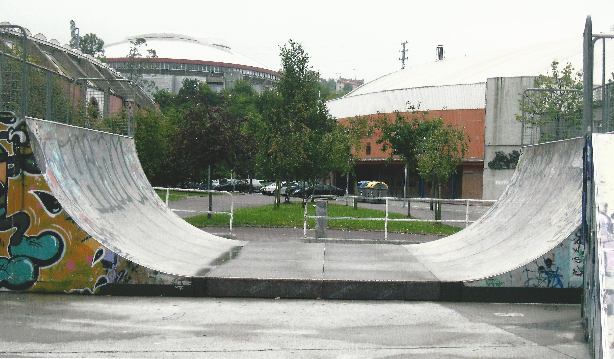

Actividad 3
Continuamos nuestro trabajo en grupo. Y ahora nos toca reflexionar sobre la realidad.
En muchas ocasiones observamos curvas y pensamos qué se ajustan muy bien a funciones conocidas, pero.. ¿es esto así?
Para comprobarlo, utiliza el geogebra que tienes abajo con los dos ejemplos que te doy a continuación.
Skate
Aparentemente, el skate parece ajustarse a una parábola. ¿Existe alguna parábola qué se ajuste a esta forma?
Qué ocurre si utilizamos la cúpula del fondo. ¿Puede ajustarse a una parábola?
Mulhacén
Normalmente, cuando miramos una montaña parece tener forma de parábola. Vamos a comprobarlo con el Mulhacén. ¿Se ajusta a una parábola?